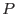

Where we have just a single image we assume a probabilistic mode of source detection such that, at a given image pixel, if the probability  that the observed value at that pixel could have arisen through statistical fluctuation of the background at that pixel lies below a certain limiting probability
, the pixel is considered to contain a source. In XMM practice it is likelihood  rather than itself which is employed; in this case the detection criterion is for
rather than itself which is employed; in this case the detection criterion is for  to exceed the cutoff
.
to exceed the cutoff
.
Matters become more complicated when one has  images taken in different energy bands (or in other differing circumstances). If one has no knowledge of the source spectrum then the best approach is probably to do as eboxdetect
does, that is to calculate detection likelihood for all the images separately, then add these numbers together. A sum of independent likelihood values like this can be shown to have a null-hypothesis probability distribution approximately given by the formula
images taken in different energy bands (or in other differing circumstances). If one has no knowledge of the source spectrum then the best approach is probably to do as eboxdetect
does, that is to calculate detection likelihood for all the images separately, then add these numbers together. A sum of independent likelihood values like this can be shown to have a null-hypothesis probability distribution approximately given by the formula
where  is the incomplete gamma function
is the incomplete gamma function
The final step in the eboxdetect approach is to calculate as per equation 1 then test against the cutoff likelihood as for the single-image case.
The alternative used in the present task is to make a weighted sum of the input images, then perform source detection on the single summed image. For probabilistic detection to work in this scenario we need to find the probability distribution of a weighted sum of Poisson variates. Full discussion of this issue is postponed until section 3.4; suffice it to say here that an approximate expression for this probability distribution has been found. The detection scheme then works like any other: for each pixel, the likelihood that the detected value could have resulted through chance is calculated, and the pixel is designated as a source if the threshhold likelihood is exceeded.
The drawback to the eboxdetect approach is that, at image pixels where there is a substantial contribution from a source, the values at this pixel in the different images are no longer independent samples of the background - one expects them all to be higher than the background in general and, if the source spectrum is known, one has additionally some expectation of the ratios at that pixel between the images. It seems likely that the present approach to multi-image detection, which makes use of an a priori assumption about the source spectrum, will offer greater sensitivity (to sources which actually have this spectrum) than the eboxdetect method. At present there is no analytical proof of this, but empirical trials are planned.
So far I have been talking about source spectra, but it is worth emphasising that the same approach can be used in any situation where the ratio between expectation values of source counts over input images obtained in varying circumstances can be estimated. For instance, suppose one wants to perform source detection upon three images, all made in the same energy band, but each by a different XMM EPIC instrument. The ratio between source counts expected in the three instruments can be estimated from their respective effective area curves. These ratios are, for a narrow enough energy band, insensitive to variations in spectrum from source to source.